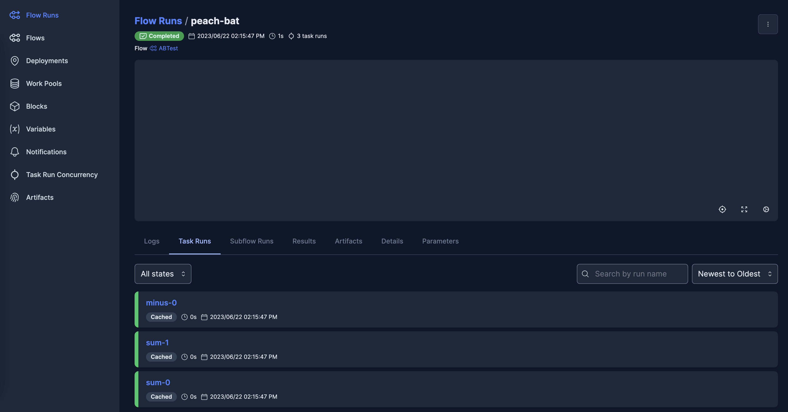

Prefect Workflow
The Prefect Workflow is a backend for configuring a FunctionFuse workflow graph as a Prefect Flow, with each FunctionFuse Node’s main function run as a Prefect Task (see the Prefect documentation).
After declaring a frontend-defined workflow, e.g.:
from functionfuse import workflow
@workflow
def sum(a, b):
return a + b
a, b = 1, 1
a_plus_b = sum(a, b).set_name("node1")
a_plus_two_b = sum(a_plus_b, b).set_name("node2")
a PrefectWorkflow can be instantiated, and the Prefect Flow can be created
using the generate_flow() function. Then run() will start a Flow Run of
the created Flow.
from functionfuse.backends.addons.prefectback import PrefectWorkflow
prefect_workflow = PrefectWorkflow(a_plus_two_b, workflow_name="sums")
prefect_workflow.generate_flow()
c = prefect_workflow.run()
Note
PrefectWorkflow.run() will call generate_flow() if the Flow object
has not been created yet
Note
While Prefect Flows can be run multiple times, with a new Flow Run created on each run of the Flow, FunctionFuse Workflows do not currently support multiple runs. The correct approach in FunctionFuse is to create a new Workflow each time the graph should be run. Of course, stored results will be loaded from storage if present on subsequent runs.
Prefect Flow options
The PrefectWorkflow can pass options when initializing the Prefect Flow. A
common example would be the Task Runner. These options are passed to the
@flow decorator. Flow options are set in the PrefectWorkflow using
set_prefect_flow_options():
from prefect.task_runners import ConcurrentTaskRunner
prefect_flow_options = {'task_runner': ConcurrentTaskRunner()}
prefect_workflow.set_prefect_flow_options(prefect_flow_options)
prefect_workflow.generate_flow()
c = prefect_workflow.run()
See the prefect.flows API for all available options.
Note
Supporting Prefect options for changing the Task Runner requires that all
tasks are executed with task.sumbmit() in the backend (see
Task runner docs).
Function execution within the backend then return PrefectFuture objects,
and the backend execution is more similar to RayWorkflow than
LocalWorkflow.
Prefect Task options
The functions assigned to nodes in the workflow graph are executed as
Prefect Tasks,
which can be assigned individual task-specific options. Options are
assigned to the .backend_info field of each node using
:ref:background/introduction:Queries through the Query.set_task_args()
function. For example, using Prefect caching features means that nodes that
use identical functions and inputs, but are assigned different node names, can
have results retrieved from the cache instead of completing unnecesary
computation:
from prefect.tasks import task_input_hash
query_task_args = {
"^.*sum.*$": {"cache_key_fn": task_input_hash},
"^.*minus.*$": {"cache_key_fn": task_input_hash},
}
for query, task_args in query_task_args.items():
prefect_workflow.query(query).set_task_args(task_args)
prefect_workflow.generate_flow()
c = prefect_workflow.run()
See the prefect.tasks API for all available options.
Storage
Any Storage class can be added to a PrefectWorkflow
using set_storage():
from functionfuse.storage import storage_factory
opt = {
"kind": "file",
"options": {
"path": "storage"
}
}
storage = storage_factory(opt)
prefect_workflow.set_storage(storage)
PrefectWorkflow.run() uses the save(), read_task(), and
always_read properties of Storage, so any
Storage class implementing those functions can be attached.
Prefect Server
The Prefect Server can be started to access the logs created by Prefect Flows and Tasks, and provide a UI and access to other Prefect options. To start the simple local server use:
$ prefect server start
Example of run logged in Prefect Server:
